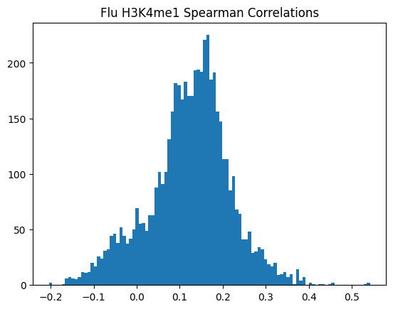

Code
import os,sys
import pickle as pkl
import numpy as np
import pandas as pd
import scipy.stats
import seaborn as sns
import matplotlib.pyplot as plt
import multiprocessing as mpWhen validating the usefulness of EnPACT models, it is helpful to also gain a handle on how much the fine-tuning step (aka the elastic net) is providing useful predictive power over even simpler approaches. For example, one can directly use an Enformer track prediction rather than using the elastic net predictions. For gene expression, the cell-type matched CAGE track is modestly correlated with ground truth during genome-wide training, but the fine-tuning step is certainly relevant.
With peak data, however, it isn’t clear which Enformer tracks are the “best” match since there aren’t even cell-type specific matches available. Here I provide some code and analysis to select Enformer tracks of relevance.
import os,sys
import pickle as pkl
import numpy as np
import pandas as pd
import scipy.stats
import seaborn as sns
import matplotlib.pyplot as plt
import multiprocessing as mpdef correlate_single_track(tracks_matrix, ground_truth_matrix, track_index, ground_truth_index, track_axis=0, ground_truth_axis=1, corr_type="pearson"):
# print(track_index, ground_truth_index, track_axis, ground_truth_axis, corr_type)
if track_axis==0:
track1 = tracks_matrix.iloc[track_index,:]
elif track_axis==1:
track1 = tracks_matrix.iloc[:,track_index]
if ground_truth_axis==0:
track2 = ground_truth_matrix.iloc[ground_truth_index,:]
elif ground_truth_axis==1:
track2 = ground_truth_matrix.iloc[:,ground_truth_index]
if corr_type=="pearson":
correlation = scipy.stats.pearsonr(track1, track2)
elif corr_type=="spearman":
correlation = scipy.stats.spearmanr(track1, track2)
return(correlation)
def correlate_all_tracks(tracks_matrix, ground_truth_matrix, num_tracks, ground_truth_index, track_axis=0, ground_truth_axis=1,corr_type="pearson"):
correlations = []
pvalues = []
for i in range(num_tracks):
corr_results = correlate_single_track(tracks_matrix, ground_truth_matrix, i, ground_truth_index, track_axis, ground_truth_axis, corr_type)
correlations.append(corr_results[0])
pvalues.append(corr_results[1])
return({
"correlations": correlations,
"pvalues": pvalues
})\(n_v\)=number of peaks in validation set
\(m\)=number of enformer tracks
Track matrix is \(n_v \times m\)
For each of \(m\) Enformer tracks, we correlate the across \(n_v\) peaks in thee validation set to produce \(m\) correlations.
# Load ground truth mean feature intensities
path_to_mean_normalized_ground_truth = "/beagle3/haky/users/saideep/projects/Con_EnPACT/models/Flu_ATAC_ws8/intermediates/generate_enpact_training_data/valid_Flu_mean_expression.tsv"
mean_normalized_ground_truth = pd.read_csv(path_to_mean_normalized_ground_truth, sep="\t", index_col=0, header=None)
mean_normalized_ground_truth[2] = 1
# Load validation dataset enpact predictions from training
path_to_validation_enpact_preds = "/beagle3/haky/users/saideep/projects/Con_EnPACT/models/Flu_ATAC_ws8/intermediates/generate_enpact_training_data/epigenome_valid.txt"
validation_enpact_preds = pd.read_csv(path_to_validation_enpact_preds, sep="\t", index_col=0, header=None)
# Order dataframes to match
validation_enpact_preds = validation_enpact_preds.sort_index()
mean_normalized_ground_truth = mean_normalized_ground_truth.sort_index()for tind in range(5313):
correlation = validation_enpact_preds.iloc[:,tind].corr(mean_normalized_ground_truth.iloc[:,0], method="pearson")
print(correlation)enpact_proj_dir = "/beagle3/haky/users/saideep/projects/Con_EnPACT/models"
optimal_window_sizes = {
"H3K27ac":8,
"H3K27me3":64,
"H3K4me1":32,
"H3K4me3":8,
"ATAC":8
}
corr_table = {
"correlation":[],
"correlation_type":[],
"modality":[],
"condition":[],
"track_index":[]
}
for modality in optimal_window_sizes.keys():
for condition in ["Flu","NI"]:
path_to_mean_normalized_ground_truth = os.path.join(enpact_proj_dir, condition + "_" + modality + f"_ws{optimal_window_sizes[modality]}/intermediates/generate_enpact_training_data/valid_" + condition + "_mean_expression.tsv")
mean_normalized_ground_truth = pd.read_csv(path_to_mean_normalized_ground_truth, sep="\t", index_col=0, header=None)
path_to_validation_enpact_preds = os.path.join(enpact_proj_dir, condition + "_" + modality + f"_ws{optimal_window_sizes[modality]}/intermediates/generate_enpact_training_data/epigenome_valid.txt")
validation_enpact_preds = pd.read_csv(path_to_validation_enpact_preds, sep="\t", index_col=0, header=None)
validation_enpact_preds = validation_enpact_preds.sort_index()
mean_normalized_ground_truth = mean_normalized_ground_truth.sort_index()
pearson_corrs = correlate_all_tracks(validation_enpact_preds, mean_normalized_ground_truth, validation_enpact_preds.shape[1], 0,
track_axis=1, ground_truth_axis=1, corr_type="pearson")
for i,pcorr in enumerate(pearson_corrs):
corr_table["correlation"].append(pcorr)
corr_table["correlation_type"].append("pearson")
corr_table["modality"].append(modality)
corr_table["condition"].append(condition)
corr_table["track_index"].append(i)
plt.hist(pearson_corrs, bins=100)
plt.title(f"{condition} {modality} Pearson Correlations")
plt.show()
plt.clf()
# corrs = []
spearman_corrs = correlate_all_tracks(validation_enpact_preds, mean_normalized_ground_truth, validation_enpact_preds.shape[1], 0,
track_axis=1, ground_truth_axis=1, corr_type="spearman")
for i,scorr in enumerate(spearman_corrs):
corr_table["correlation"].append(pcorr)
corr_table["correlation_type"].append("spearman")
corr_table["modality"].append(modality)
corr_table["condition"].append(condition)
corr_table["track_index"].append(i)
plt.hist(spearman_corrs, bins=100)
plt.title(f"{condition} {modality} Spearman Correlations")
plt.show()
plt.clf()


<Figure size 640x480 with 0 Axes>corrs_df = pd.DataFrame(corr_table)
corrs_df.to_csv("/beagle3/haky/users/saideep/github_repos/Daily-Blog-Sai/posts/2024-04-22-analyze_peak_personalized_prediction/cross_genome_correlations.csv", index=False)\(n_p\)=number of peaks in personalized accuracy set
\(m\)=number of enformer tracks
\(i\)=number of individualss
Track matrix is \(i \times n_p \times m\)
For each of \(m\) Enformer tracks, we compute the cross-individual correlation distribution for each peak. This yields \(m \times n_p\) correlations per EnPACT model.
# Load In ground truth feature x individual matrix
path_to_normalized_ground_truth = "/beagle3/haky/users/saideep/projects/aracena_modeling/Inputs/normalized_peak_data/fully_preprocessed_Flu_H3K4me1_4_2.txt"
# Load in set of Enformer predictions for each feature at a time (enformer track x individual matrix)
path_to_collected_predictions = "/beagle3/haky/users/saideep/projects/Con_EnPACT/models/Flu_H3K4me1_ws32/intermediates/personalized_prediction/collected_predictions"
# Path to liftover mapping
path_to_liftover_mapping = "/beagle3/haky/users/saideep/projects/Con_EnPACT/models/Flu_H3K4me1_ws32/intermediates/personalized_prediction/lo_mapping.csv"
lo_mapping = {}
expand_mapping = {}
with open(path_to_liftover_mapping, "r") as f:
for line in f:
line = line.strip().split(",")
lo_mapping[line[0]] = line[1]
expand_mapping[line[2]] = line[1]# We need to collect the personalized Enformer predictions together. They are stored as individual, haplotype specific text files with
# of dimension peaks x tracks. We need to collect them together into a single matrix of dimension peaks x individuals x tracks
files_in_dir = os.listdir(path_to_collected_predictions)
inds = list(set([f.split("_")[0] for f in files_in_dir]))
inds_pass = []
mean_tables = []
print(inds)
for ind in inds:
hap1_table = pd.read_csv(os.path.join(path_to_collected_predictions, f"{ind}_haplo1.txt"), sep="\t", index_col=0, header=None)
hap2_table = pd.read_csv(os.path.join(path_to_collected_predictions, f"{ind}_haplo2.txt"), sep="\t", index_col=0, header=None)
mean_table = (hap1_table + hap2_table) / 2
mean_table.index = [expand_mapping[peak] for peak in mean_table.index]
if mean_table.shape[0] > 500:
inds_pass.append(ind)
mean_tables.append(mean_table)
peaks = list(mean_tables[0].index)['EU39', 'EU25', 'AF34', 'EU13', 'EU33', 'AF28', 'AF16', 'EU19', 'EU47', 'EU15', 'EU29', 'AF20', 'EU22', 'AF24', 'EU21', 'AF06', 'EU36', 'AF04', 'EU05', 'AF30', 'EU38', 'EU27', 'EU41', 'AF26', 'EU03', 'AF18', 'AF08', 'EU09', 'AF12', 'EU07']normalized_ground_truth = pd.read_csv(path_to_normalized_ground_truth, sep="\t", index_col=0)
normalized_ground_truth_peaks = list(normalized_ground_truth.index)
print(len(normalized_ground_truth_peaks))
ngt_peaks_in_lo = [p for p in normalized_ground_truth_peaks if p in lo_mapping.keys()]
normalized_ground_truth_filt = normalized_ground_truth.loc[ngt_peaks_in_lo]
print(normalized_ground_truth_filt.shape)
lo_peaks_ngt = [lo_mapping[p] for p in list(normalized_ground_truth_filt.index)]
print(len(lo_peaks_ngt))
normalized_ground_truth_filt.index = lo_peaks_ngt
print(normalized_ground_truth_filt.shape)
# normalized_ground_truth_peaks_lo = [lo_mapping[p] for p in normalized_ground_truth_peaks if p in lo_mapping.keys()]
# print(len(normalized_ground_truth_peaks_lo))
# print(normalized_ground_truth_peaks_lo[0:2])
common_peaks_lo = list(set(normalized_ground_truth_filt.index).intersection(set(peaks)))
print(len(common_peaks_lo))
peaks_common = [p for p in peaks if p in common_peaks_lo]
print(len(peaks_common))
normalized_ground_truth_filt = normalized_ground_truth_filt.loc[peaks_expanded_common]
print(normalized_ground_truth_filt.shape)
113045
(1000, 30)
1000
(1000, 30)
989
989
(989, 30)normalized_ground_truth_filt = normalized_ground_truth_filt.loc[:,inds_pass]print(mean_tables[0].shape)
mean_tables = [x.loc[peaks_common] for x in mean_tables]
pp_matrix = np.stack(mean_tables, axis=2)
print(pp_matrix.shape)(989, 5313)
(989, 5313, 27)corr_table = {
"correlation":[],
"correlation_type":[],
"modality":[],
"condition":[],
"track_index":[],
"peak":[]
}
for i,peak in enumerate(peaks_common):
if i % 50 == 0:
print(i)
cur_track_mat = pd.DataFrame(pp_matrix[i,:,:])
cur_gt_mat = pd.DataFrame(normalized_ground_truth_filt.loc[peak,:])
cur_gt_mat.index = range(cur_gt_mat.shape[0])
cur_track_mat.index = range(cur_track_mat.shape[0])
corrs_pearson = correlate_all_tracks(cur_track_mat, cur_gt_mat,
cur_track_mat.shape[0], 0,
track_axis=0, ground_truth_axis=1, corr_type="pearson")
# print(len(corrs_pearson))
for j,corr in enumerate(corrs_pearson):
corr_table["correlation"].append(corr)
corr_table["correlation_type"].append("pearson")
corr_table["modality"].append("H3K4me1")
corr_table["condition"].append("Flu")
corr_table["track_index"].append(j)
corr_table["peak"].append(peak)
0
50
100
150
200
250
300
350
400
450
500
550
600
650
700
750
800
850
900
950corr_table_df = pd.DataFrame(corr_table)
corr_table_df.to_csv("/beagle3/haky/users/saideep/github_repos/Daily-Blog-Sai/posts/2024-04-22-analyze_peak_personalized_prediction/personalized_correlations_peaks.csv", index=False)
# Reload table
corr_table_df = pd.read_csv("/beagle3/haky/users/saideep/github_repos/Daily-Blog-Sai/posts/2024-04-22-analyze_peak_personalized_prediction/personalized_correlations_peaks_H3K4me1_Flu.csv")Or in other words, if we use each track as a predictor like EnPACT and make predictions on all peaks, which ones tend to perform well broadly?
corr_table_df.groupby(by=["track_index"]).mean(numeric_only=True).hist(bins=100, column="correlation")array([[<Axes: title={'center': 'correlation'}>]], dtype=object)This is a simple strategy where we select the best track for each peak and use that as the prediction. This turns out to be more of an exercise in overfitting, but it is still interesting to see how well it performs.
The plot below shows the distribution of maximum correlations for each peak from correlating each enformer track prediction with the ground truth. It should be compared with max correlations sampled from the null because the values will be heavily inflated from randomness alone.
# Simulate null max correlation distribution
number_of_tracks = corr_table_df["track_index"].nunique()
number_of_individuals = len(inds_pass)
max_corr_per_peak_df = corr_table_df.groupby(by=["peak"]).max(numeric_only=True)
null_max_corr_samples = []
null_max_generous_samples = []
for x in range(max_corr_per_peak_df.shape[0]):
null_max_corr_samples.append(np.max(np.tanh(np.random.normal(size=number_of_tracks)/np.sqrt(number_of_individuals-3))))
null_max_generous_samples.append(np.max(np.tanh(np.random.normal(size=number_of_tracks//10)/np.sqrt(number_of_individuals-3))))
max_corr_per_peak_df["null_max_corr"] = null_max_corr_samples
max_corr_per_peak_df["null_max_10th"] = null_max_generous_samplessns.violinplot(data=max_corr_per_peak_df[["correlation","null_max_corr","null_max_10th"]])
plt.title("Distribution of Max Correlation Across Enformer Tracks per Peak")Text(0.5, 1.0, 'Distribution of Max Accuracy Across Enformer Tracks per Peak')As can be seen, this kind of strategy is sensitive to noise. Just sampling from random distributions can lead to relatively accurate predictors by chance (because there are so many tracks). Obviously, we would not expect this strategy to generalize well to new individuals being introduced. Better selection would then require assessment on a held-out set of individuals, but the number of individuals utilized here is already relatively small. Difficult to assess.
def run_personalized_correlations(ground_truth_path, collected_predictions_path, lo_mapping_path,
condition, modality, output_path):
lo_mapping = {}
expand_mapping = {}
with open(lo_mapping_path, "r") as f:
for line in f:
line = line.strip().split(",")
lo_mapping[line[0]] = line[1]
expand_mapping[line[2]] = line[1]
# We need to collect the personalized Enformer predictions together. They are stored as individual, haplotype specific text files with
# of dimension peaks x tracks. We need to collect them together into a single matrix of dimension peaks x individuals x tracks
print("Collecting enformer predictions")
files_in_dir = os.listdir(collected_predictions_path)
inds = list(set([f.split("_")[0] for f in files_in_dir]))
inds_pass = []
mean_tables = []
for ind in inds:
hap1_table = pd.read_csv(os.path.join(collected_predictions_path, f"{ind}_haplo1.txt"), sep="\t", index_col=0, header=None)
hap2_table = pd.read_csv(os.path.join(collected_predictions_path, f"{ind}_haplo2.txt"), sep="\t", index_col=0, header=None)
mean_table = (hap1_table + hap2_table) / 2
mean_table.index = [expand_mapping[peak] for peak in mean_table.index]
if mean_table.shape[0] > 500:
inds_pass.append(ind)
mean_tables.append(mean_table)
peaks = list(mean_tables[0].index)
# Load ground truth and align the tables
print("Loading ground truth and aligning tables")
normalized_ground_truth = pd.read_csv(ground_truth_path, sep="\t", index_col=0)
normalized_ground_truth_peaks = list(normalized_ground_truth.index)
ngt_peaks_in_lo = [p for p in normalized_ground_truth_peaks if p in lo_mapping.keys()]
normalized_ground_truth_filt = normalized_ground_truth.loc[ngt_peaks_in_lo]
lo_peaks_ngt = [lo_mapping[p] for p in list(normalized_ground_truth_filt.index)]
normalized_ground_truth_filt.index = lo_peaks_ngt
common_peaks_lo = list(set(normalized_ground_truth_filt.index).intersection(set(peaks)))
peaks_common = [p for p in peaks if p in common_peaks_lo]
normalized_ground_truth_filt = normalized_ground_truth_filt.loc[peaks_common]
normalized_ground_truth_filt = normalized_ground_truth_filt.loc[:,inds_pass]
mean_tables = [x.loc[peaks_common] for x in mean_tables]
pp_matrix = np.stack(mean_tables, axis=2)
# Calculate correlations
print("Calculating correlations")
corr_table = {
"correlation":[],
"pvalue":[],
"correlation_type":[],
"modality":[],
"condition":[],
"track_index":[],
"peak":[]
}
for i,peak in enumerate(peaks_common):
if i % 50 == 0:
print(i)
cur_track_mat = pd.DataFrame(pp_matrix[i,:,:])
cur_gt_mat = pd.DataFrame(normalized_ground_truth_filt.loc[peak,:])
cur_gt_mat.index = range(cur_gt_mat.shape[0])
cur_track_mat.index = range(cur_track_mat.shape[0])
corrs_pearson = correlate_all_tracks(cur_track_mat, cur_gt_mat,
cur_track_mat.shape[0], 0,
track_axis=0, ground_truth_axis=1, corr_type="pearson")
# print(len(corrs_pearson))
for j,corr in enumerate(corrs_pearson["correlations"]):
corr_table["correlation"].append(corrs_pearson["correlations"][j])
corr_table["pvalue"].append(corrs_pearson["pvalues"][j])
corr_table["correlation_type"].append("pearson")
corr_table["modality"].append(modality)
corr_table["condition"].append(condition)
corr_table["track_index"].append(j)
corr_table["peak"].append(peak)
corr_table_df = pd.DataFrame(corr_table)
corr_table_df.to_csv(output_path, index=False)path_to_normalized_ground_truth = "/beagle3/haky/users/saideep/projects/aracena_modeling/Inputs/normalized_peak_data/fully_preprocessed_Flu_H3K27ac_1_1.txt"
path_to_collected_predictions = "/beagle3/haky/users/saideep/projects/Con_EnPACT/models/Flu_H3K27ac_ws8/intermediates/personalized_prediction/collected_predictions"
lo_mapping_path = "/beagle3/haky/users/saideep/projects/Con_EnPACT/models/Flu_H3K27ac_ws8/intermediates/personalized_prediction/lo_mapping.csv"
out_path = "/beagle3/haky/users/saideep/github_repos/Daily-Blog-Sai/posts/2024-04-22-analyze_peak_personalized_prediction/personalized_correlations_peaks_H3K27ac_Flu_withp.csv"
# run_personalized_correlations(path_to_normalized_ground_truth,
# path_to_collected_predictions,
# lo_mapping_path, "Flu", "H3K27ac", out_path)How does each track perform across all peaks? Are there any “top performers”?
corr_table_df = pd.read_csv(out_path)corr_table_df["pvalue"].hist(bins=100)<Axes: >correlations_per_track_mean = corr_table_df.groupby(by=["track_index"]).mean(numeric_only=True)
correlations_per_track_median = corr_table_df.groupby(by=["track_index"]).median(numeric_only=True)
summary_correlations_per_track = pd.DataFrame({
"mean":correlations_per_track_mean["correlation"],
"median":correlations_per_track_median["correlation"]
})
sns.violinplot(data=summary_correlations_per_track)
plt.title("Distribution of Central Tendency of Cross-individual Correlations Across Peaks per Enformer Track, Flu H3K27ac")
plt.axhline(y=0.113454, linewidth=2, color='orange', ls=':')
plt.axhline(y=0.139213, linewidth=2, color='blue', ls=':')<matplotlib.lines.Line2D at 0x7f71ca268100>corr_table_df_abs = corr_table_df.copy()
corr_table_df_abs["correlation"] = corr_table_df_abs["correlation"].abs()
correlations_per_track_mean = corr_table_df_abs.groupby(by=["track_index"]).mean(numeric_only=True)
correlations_per_track_median = corr_table_df_abs.groupby(by=["track_index"]).median(numeric_only=True)
summary_correlations_per_track = pd.DataFrame({
"mean":correlations_per_track_mean["correlation"],
"median":correlations_per_track_median["correlation"]
})
sns.violinplot(data=summary_correlations_per_track)
plt.title("Distribution of Central Tendency of Cross-individual Correlations Across Peaks per Enformer Track, Flu H3K27ac")
plt.axhline(y=0.210726, linewidth=2, color='orange', ls=':')
plt.axhline(y=0.269129, linewidth=2, color='blue', ls=':')<matplotlib.lines.Line2D at 0x7f71ca1dbc70>print(correlations_per_track_mean.sort_values(by="correlation", ascending=False).head(10))
print(correlations_per_track_median.sort_values(by="correlation", ascending=False).head(10)) correlation pvalue
track_index
392 0.117406 0.267187
508 0.116284 0.281579
817 0.115738 0.270199
517 0.115141 0.269542
3343 0.114150 0.292519
1487 0.111172 0.279093
3895 0.110599 0.311556
1981 0.110254 0.319422
511 0.110180 0.299486
514 0.108054 0.268663
correlation pvalue
track_index
817 0.140723 0.352135
1981 0.136266 0.376549
3343 0.135378 0.368423
392 0.131819 0.354454
1715 0.130305 0.367447
3690 0.130158 0.371465
517 0.129652 0.355293
508 0.129519 0.353403
353 0.129184 0.348778
3895 0.128923 0.3688353343: CHIP:H3K27ac:peripheral blood mononuclear cell male adult (32 years)
392: DNASE:CD14-positive monocyte male adult (21 year)
817: CHIP:H3K27ac:CD14-positive monocyte female
508: DNASE:CD14-positive monocyte male adult (37 years)
This is interesting, the best performing tracks make a lot of biological sense! They also do pretty well as predictors in their own right. EnPACT is on the very high end of the distribution, which is good. A more full picture would dissect where the differences are. For example, are differentially expressed genes between Flu/NI also handled differently by the EnPACT model?
# Load in EnPACT personalized prediction performance
cur_proj_dir = "/beagle3/haky/users/saideep/projects/Con_EnPACT/models/Flu_H3K27ac_ws8/intermediates/personalized_prediction/collected_predictions"
pp_analysis_dir = os.path.join("/beagle3/haky/users/saideep/projects/Con_EnPACT/models/Flu_H3K27ac_ws8","intermediates","personalized_prediction","personalized_prediction_accuracy")
correlation_set_pkl_path = os.path.join(pp_analysis_dir, "correlation_sets.pkl")
correlation_set = pkl.load(open(correlation_set_pkl_path, "rb"))all_corrs = []
for cur_set in correlation_set.keys():
for corr_type in correlation_set[cur_set].keys():
cur_corr_df = pd.DataFrame({
"model_type": cur_set,
"corr":list(correlation_set[cur_set][corr_type]),
"corr_type":corr_type,
"modality":"H3K27ac",
"context":"Flu",
})
all_corrs.append(cur_corr_df)
all_corrs_df = pd.concat(all_corrs)
all_corrs_df["EnPACT"] = [True if "EnPACT" in x else False for x in all_corrs_df["model_type"]]
all_corrs_df["abs"] = all_corrs_df["corr"].abs()print(all_corrs_df.groupby(by=["EnPACT","corr_type"]).mean(numeric_only=True))
print(all_corrs_df.groupby(by=["EnPACT","corr_type"]).median(numeric_only=True)) corr abs
EnPACT corr_type
False pearson 0.297763 0.317876
spearman 0.908245 0.908245
True anal_null_pearson 0.001181 0.158378
emp_null_pearson 0.139213 0.269129
emp_null_spearman 0.125339 0.253443
pearson 0.139213 0.269129
spearman 0.125339 0.253443
corr abs
EnPACT corr_type
False pearson 0.287271 0.289807
spearman 0.934359 0.934359
True anal_null_pearson -0.000756 0.134605
emp_null_pearson 0.113454 0.210726
emp_null_spearman 0.111453 0.203761
pearson 0.113454 0.210726
spearman 0.111453 0.203761# Simulate null max correlation distribution
number_of_tracks = corr_table_df["track_index"].nunique()
# number_of_individuals = len(inds_pass)
number_of_individuals = 27
max_corr_per_peak_df = corr_table_df.groupby(by=["peak"]).max(numeric_only=True)
null_max_corr_samples = []
null_max_generous_samples = []
for x in range(max_corr_per_peak_df.shape[0]):
null_max_corr_samples.append(np.max(np.tanh(np.random.normal(size=number_of_tracks)/np.sqrt(number_of_individuals-3))))
null_max_generous_samples.append(np.max(np.tanh(np.random.normal(size=number_of_tracks//10)/np.sqrt(number_of_individuals-3))))
max_corr_per_peak_df["null_max_corr"] = null_max_corr_samples
max_corr_per_peak_df["null_max_10th"] = null_max_generous_samplessns.violinplot(data=max_corr_per_peak_df[["correlation","null_max_corr","null_max_10th"]])
plt.title("Distribution of Max Correlation Across Enformer Tracks per Peak, Flu H3K2ac")Text(0.5, 1.0, 'Distribution of Max Correlation Across Enformer Tracks per Peak, Flu H3K2ac')